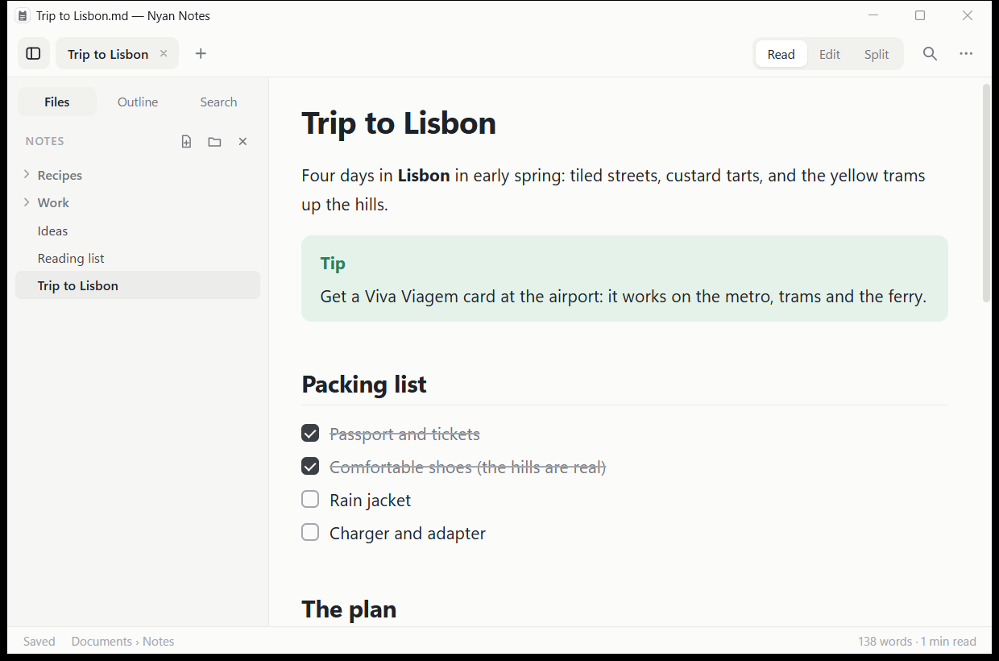
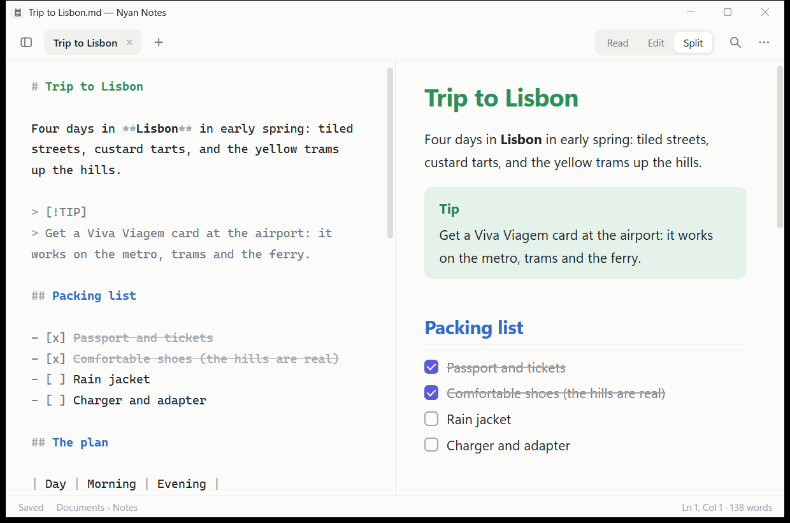
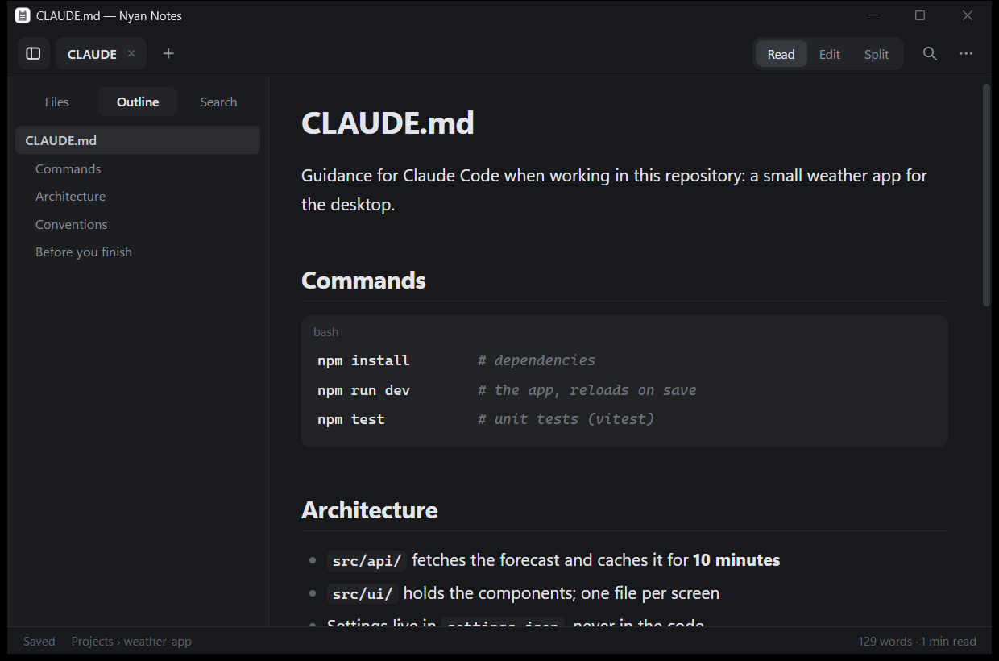

Read and write markdown,
beautifully.
Nyan Notes opens your .md files as clean, calm pages to read, and a press of Ctrl+E turns them into a colourful editor to write in. A small, free app for Windows.

Everything a note needs, nothing it doesn't
Double-click a markdown file and it opens like a page from a good book. Press Ctrl+E when you want to write.
Read beautifully
Headings, tables, code, pictures and checklists, laid out with room to breathe. Tick a box right on the page.
Write with colour
The editor colours headings, links and lists as you type, and keeps your lists going when you press Enter. Or see both side by side.
Tabs and folders
Open a folder and every note is one click away in the sidebar. Ctrl+P jumps to any note by its name.
Search everything
Find a word across all your notes, then open the note right at that line, with the word highlighted.
Pictures just work
Paste a screenshot or drop a picture on a note: it's saved next to the note and shows up straight away.
Never lose a word
Every save keeps the version it replaced for a while. If another app changes your file, Nyan Notes notices and asks first.


Installed in a minute
No account, no admin rights, nothing else to download.
Download and unzip
Get the zip, right-click it and choose Extract all.
Open it, click Install
Open NyanNotes.exe and click Install. It joins your Start menu.
Choose it for .md files
Click Choose Nyan Notes for .md files and pick it in the settings Windows opens. Done: your notes open with a double-click.
Good to know
Honest answers to the questions people ask first.
Windows says "Windows protected your PC". Is it safe?
Windows shows that for new apps that aren't signed with a paid certificate yet, which is the case for Nyan Notes. Click More info, then Run anyway. You only need to do it once.
Windows blocked it and there's no "Run anyway".
That's Smart App Control, a stricter setting on some Windows 11 PCs. It blocks apps that aren't signed, and Nyan Notes isn't signed yet. We don't recommend turning it off just for this: Windows makes it hard to turn back on.
Does it work with my existing notes?
Yes. Nyan Notes reads and writes plain markdown files and keeps them exactly as they were: their encoding and their line endings. Obsidian-style [[links]] and ![[pictures]] work too.
Does it send my notes anywhere?
No. There's no account, no cloud and no tracking. Your notes never leave your PC. Read the privacy page.
How do I remove it?
Settings → Apps → Installed apps → Nyan Notes → Uninstall. Your notes stay where they are.
Is it really free?
Yes, free to download and use.